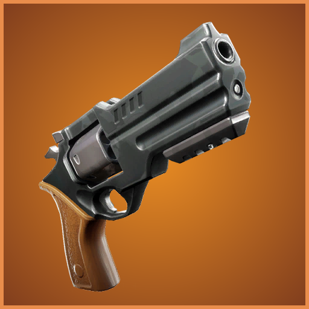
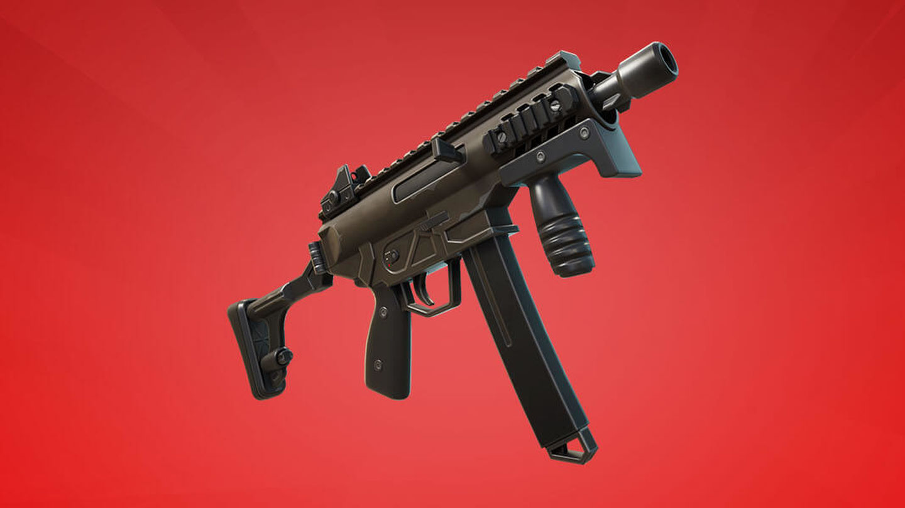
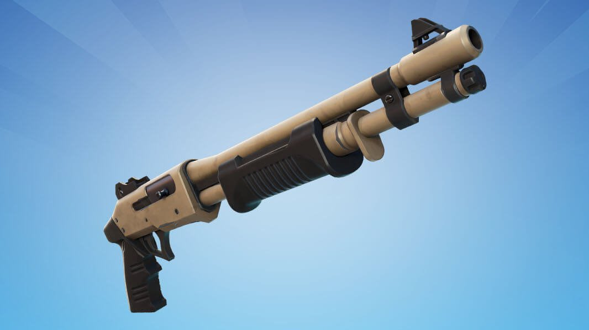
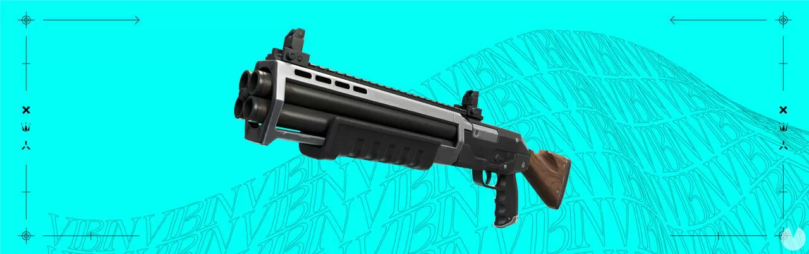
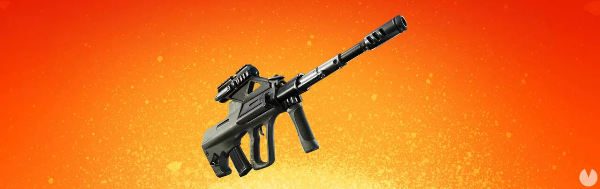
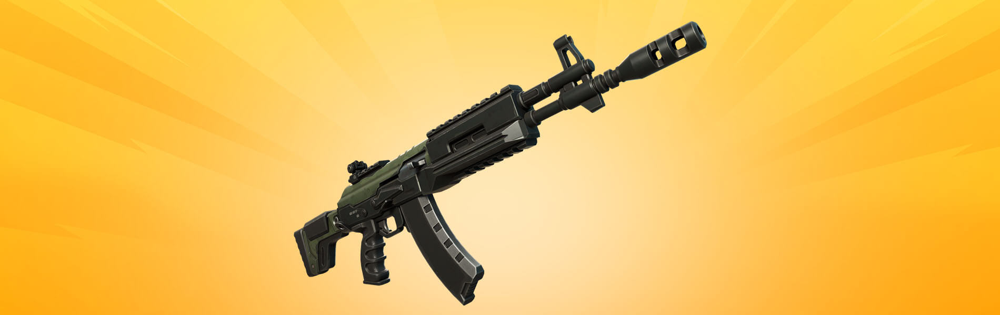
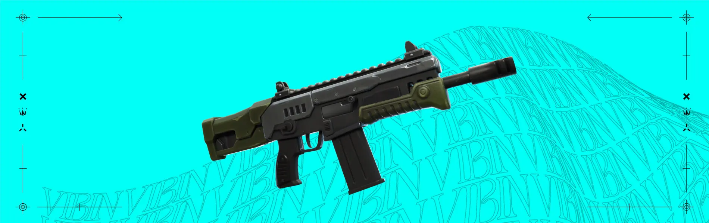
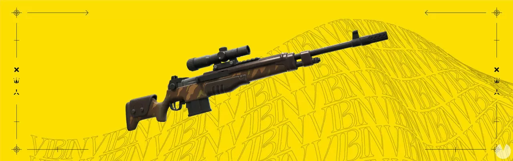
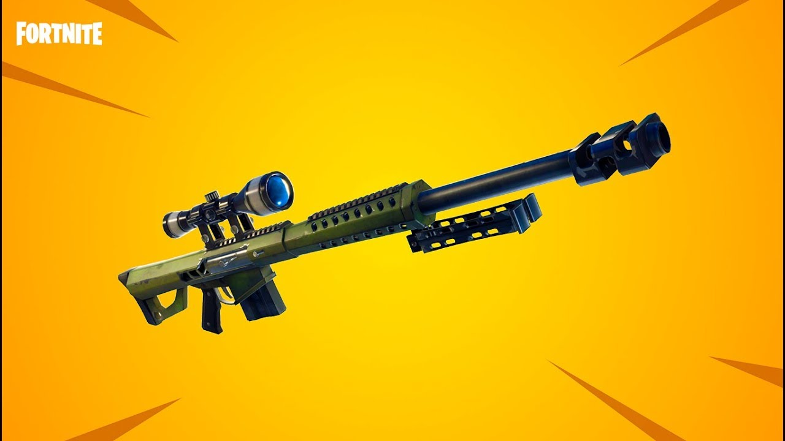

¡La Temporada 3: Buena Onda de Fortnite: Battle Royale Capítulo 3 ya está disponible! Como es costumbre, Epic Games se encarga de actualizar el armamento disponible en el juego con cada nueva temporada, y en esta ocasión tenemos a nuestro alcance un buen amasijo de armas para deshacernos de nuestros rivales.
Antes de enseñarte las armas del Capítulo 3 - Temporada 3 de Fortnite, merece la pena mencionar (por si es tu primera vez en el juego) que cada arma tiene un tipo de rareza distinta representada con un color. Por lo general, cuanto más rara sea un arma mejores serán sus estadísticas y más difícilmente la encontrarás en la partida.
Las rarezas de las armas en Fortnite son las siguientes (no han cambiado con respecto al pasado):
- Común:
- Poco Común
- Rara
- Épica
- Legendaria
No nos olvidamos de que también existen dos categorías de rareza especiales. Unas son las armas míticas (de color dorado), y la otra las armas exóticas (de color azul claro).
Pistolas
Pistola secundaria
Un arma fiable que os acompañará siempre. La pistola secundaria es un arma precisa que inflige una gran cantidad de daño a medio alcance y gran daño a la cabeza a corto alcance.
Revólver
Simple, fiable y potente, el revólver contiene 6 balas y hace un daño considerable a la cabeza.
Subfusiles
Subfusil de combate
Al igual que el fusil de asalto de combate o la pistola de combate, el subfusil de combate causa verdaderos estragos. Familiarizaos con el retroceso para sacarle el máximo partido a su potencia.
Subfusil aguijón
El subfusil aguijón inflige gran cantidad de daño tanto a oponentes como a estructuras. ¡A medio alcance pica más de lo que os imagináis!
Escopetas
Escopeta automática
Un arma automática con una potencia de fuego tremenda. Puede que la escopeta automática no inflija tanto daño con cada disparo como la escopeta de corredera y ariete, pero la cadencia de fuego es superior y, además, los cartuchos se recargan de dos en dos.
Escopeta de corredera y ariete
La escopeta de corredera y ariete dispara un montón de proyectiles e inflige un daño de ráfaga elevado.
Escopeta de dos disparos
La escopeta de dos disparos es una escopeta de corredera de ráfaga capaz de infligir una gran cantidad de daño. Si conseguís alcanzar a vuestro objetivo con los dos disparos de la ráfaga, podéis infligir una cantidad de daño devastadora.
Fusiles de asalto
Fusil ariete
El fusil ariete (asalto de ráfaga) es un fusil de ráfaga con mira personalizada. ¡Disparad con este arma semiautomática de dos disparos mientras apuntáis con la mira!
Fusil de asalto de comando
Diseñado para atacar desde la distancia. El fusil de asalto de comando es una potente arma a media distancia que también resulta bastante útil a larga distancia.
Fusil de asalto martillo
El fusil de asalto martillo no solo dispara rápido; si conseguís dominar su retroceso único, ¡dispondréis de un arma muy poderosa a diferentes distancias!
Francotiradores
Fusil de tirador designado
El alcance de este fusil con mira se sitúa entre el de un fusil de asalto y un fusil de tirador. Dominad el fusil de tirador designado y se os recompensará con creces en el campo de batalla.
Fusil de tirador pesado
El fusil de tirador pesado vuelve a la carga y se ha renovado para combatir las últimas incursiones de vehículos. Sus balas de gran calibre ahora infligen daño adicional a los vehículos. Ni los oponentes a distancia ni el blindaje de los vehículos blindados resistirán mucho tiempo si están en el punto de mira de este arma.